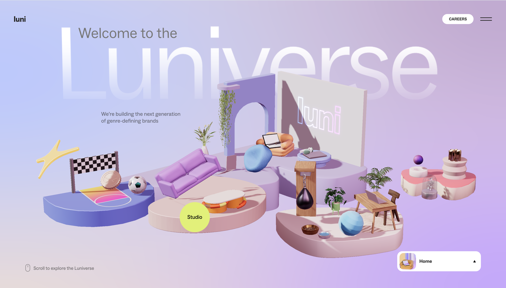
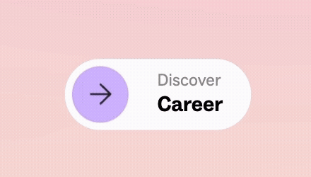
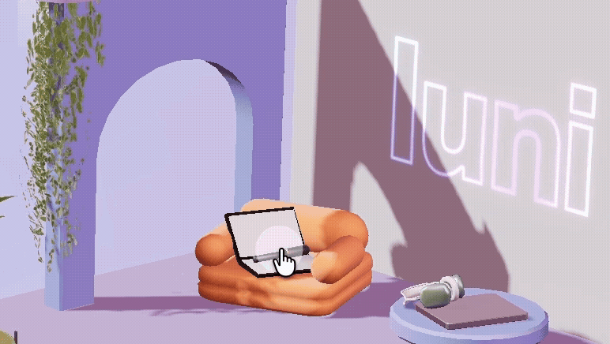

Hovered over the islands
First, I hovered the mouse over different small islands on the homepage and noticed that when the mouse hovered over them, they would float up.
Interactive Media Assignment 1
A personal research of a playful, game-like interactive company website.
Start Exploring ↓
The first thing I noticed was the visual design of the website. The soft colors made the experience feel calm and relaxing, and the floating 3D elements made the website feel interesting. Different sections were presented as four islands, which felt like a game interface. This immediately aroused my curiosity and made me want to explore the website.
First, I hovered the mouse over different small islands on the homepage and noticed that when the mouse hovered over them, they would float up.
Then, I clicked on the Omada island and opened a more detailed scene. After clicking the “Discover” button, I entered the introduction of the Omada app and scrolled to read more about it. Each section was accompanied by illustrations or animations, making the information more engaging and easier to read. I stopped at the large sentence “No money. No risk. Just fun.” because its scrolling animation caught my attention.
After returning to the main interface, I opened the Studio island and clicked "Discover". I read the large introduction text and scrolled through information about the company, its working model and its apps. I also clicked on the app download link and briefly viewed information about the team members.
I then entered the Career section. I viewed the office scene, clicked “Discover,” scrolled through information about the company culture and selected the hiring button. This opened Luni's external hiring website, where I quickly viewed the available job positions.
After returning to the Luni website, I clicked the plus button next to the company values to expand and view the descriptions.
Finally, I opened the Luni Life island and selected the “Meet our daily life” button. I browsed photographs and information about the company’s teams and events.
I spent the most time engaging with the Career section. I was really interested in the way the company presented its working environment, values, and the way it balanced work and life. I also clicked on the hiring link to enter the hiring website and spent some time browsing the available positions. This section attracted me because the company met many of my expectations for an ideal workplace.
The most common action is to scroll down the page. Most sections adopt a vertical scrolling method, and information, illustrations and animations will continuously appear as I scroll. The scrolling interaction is simple and easy to understand, and the content can be easily browsed without the need for detailed explanations.
Creative.
Open.
People-focused.
My impression is that the primary goal of the website is to introduce Luni as a creative, open and people-focused company. It promotes Luni’s app, explains the company culture and encourages potential employees to consider joining the company. This website does not only provide factual information, it creates a memorable brand image for Luni.
Visual.
Playful.
Interactive.
The experience communicates this goal through its visual style, large statements, interactive environments and carefully selected content. Statements such as “Free to be you” showing the company’s open and inclusive attitude, while content about work-life balance and welcoming different people supports this message.
I think the experience is mainly designed to be explored in one relatively focused visit lasting approximately five to ten minutes. A visitor is encouraged to open each island, scroll through its content and gradually understand the company.


The website communicates this through arrows, animated buttons, hover effects, and the changing colors. When the mouse moves over an interactive island or button, the element responds visually, showing that it can be selected. Arrows and scrolling animations suggest that the visitor should continue moving down the page.
The website also separates its information into different islands. This suggests that users do not need to view everything in a strict order and can choose the section they most interested.
The experience references virtual environments and video games. The floating islands, scene-based navigation and interactive 3D objects make the website feel like a small explorable game world rather than a standard information page.
Drawing inspiration from video games and virtual environments has led me to explore websites rather than just reading. The island design encourages me to choose different locations, hover the mouse over objects, and discover the content of each part.
These references communicate that I should feel curious, relaxed and entertained. The game-like interface creates a sense of exploration, and the soft colors and round 3D objects make the overall experience firendly and informal. Animations and playful scenes also make the company appear creative and dynamic, while the pictures of employees and company activities create a warm and welcoming atmosphere.
WAIT... THAT WAS
INTERACTIVE?



PLAYFUL
EXPLORATION